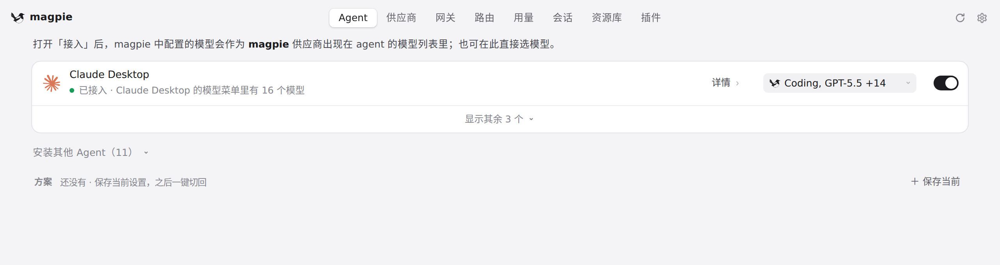
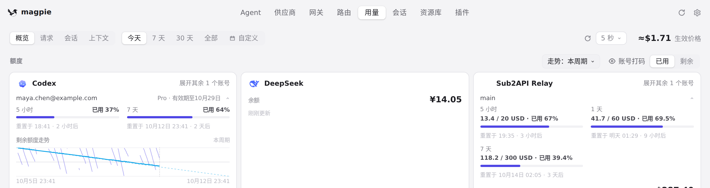

#1042 界面预览
commit d704591 · 回到 PR · macOS 26 上主窗口不再用带工具栏的标题栏：窗口圆角变成普通标题栏那种（TextEdit 的小圆角），同时把红绿灯位置、标题栏高度、sheet 起点和「另一应用在前时第一次按下即拖动窗口」的判定保留在原来工具栏的位置；判定在运行时读 macOS 版本、SDK 与 Info.plist，只在 macOS 26 且以 macOS 26 SDK 链接时生效。页面本身没有任何改动。
红线是鼠标走过的轨迹，红色圆环是一次点击；底部文字是这一步在做什么。空格暂停，← → 逐段查看。

主窗口顶部（标题栏）区域 · 主窗口打开在 Agent 页：请注意窗口最顶部，标题栏与页头/标签栏叠在同一处

主窗口顶部（标题栏）区域 · 切换标签后看一眼窗口顶部的页头与标签栏